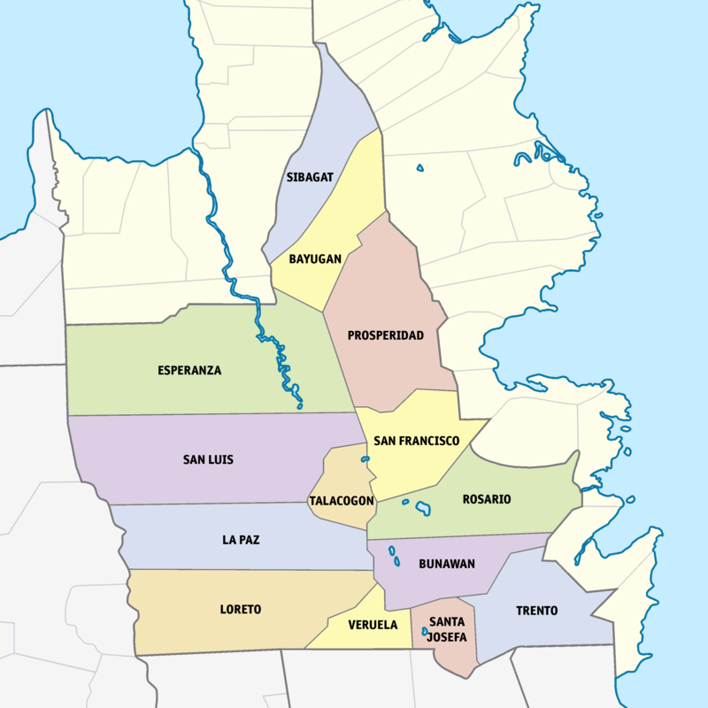

Agusan del Sur
The Land of Golden Opportunities

What is Agusan del Sur?
Agusan del Norte is a landlocked province found in the Region XIII or the CARAGA region.
Mountains are found in the eastern and western sides of the province forming a valley in the center.
It is bordered by the provinces of Misamis Oriental, Bukidnon, Agusan del Norte, Surigao del Sur,
and the northern portion of the Davao Region composed of Davao del Norte, de Oro, and Oriental.
With a total area of 8.966 square kilometers, it is the 4th largest province in the Philippines by area.
The largest wetland in the Philippines and the largest marsh in Asia, the Agusan Marsh Wildlife Sanctuary, can also be found here. Even if the province has no coastline, rice and corn plantations and fishing in the Agusan River are the main livelihood of the people. Lolong, the largest seawater crocodile caught in captivity, was found in this province.
Formed by mountains and rivers, this province is also home to many waterfalls and other scenic spots such as:
The largest wetland in the Philippines and the largest marsh in Asia, the Agusan Marsh Wildlife Sanctuary, can also be found here. Even if the province has no coastline, rice and corn plantations and fishing in the Agusan River are the main livelihood of the people. Lolong, the largest seawater crocodile caught in captivity, was found in this province.
Formed by mountains and rivers, this province is also home to many waterfalls and other scenic spots such as:
- Pinandagatan Falls
- Managong Falls, the largest in the province
- Centennial Toog Tree (said to be around 300 years old!)
- Puting Buhangin Cave
- The Tributaries of the Agusan River
- Camponay Falls
- Naliyagan Cultural Center
References
- https://www.silverkris.com/agusan-marsh/
- https://danielsecotravels.com/tourist-spots-in-agusan-del-sur-province/
- http://caragaregion.com/2017/11/02/pinandagatan-falls-new-tubigon-sibagat-agusan-del-sur/
- https://www.mindanews.com/top-stories/2020/08/300-year-old-giant-toog-tree-saved-anew-from-cutting/
- https://www.tatlerasia.com/culture/arts/weaving-the-threads-of-filipino-heritage
- https://en.wikipedia.org/wiki/Agusan_del_Sur